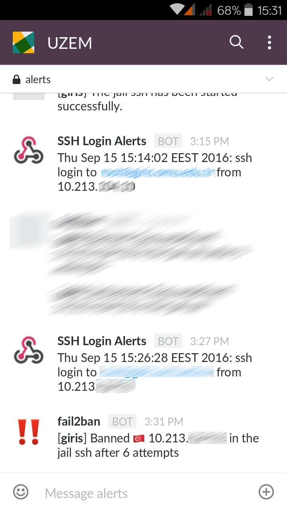

Brute Force Nedir?
Saldırganların sıklıkla tercih ettikleri tekniklerden biri de Brute Force adı verilen kaba kuvvet saldırılarıdır. Brute force bir program yardımıyla yapılabileceği gibi el ile de yapılabilir. Brute force saldırılarında kullanıcı adı ve parola bilgisi teker teker denenir. Bu saldırıda başarılı olunabilmesi için en çok kullanılan parola dizilimleri yani sözlük denilen listeler kullanılır. Ne kadar geniş bir sözlük varsa başarıya ulaşma imkanı da o kadar yüksek olur.
Uygulamalar brute force saldırılarına yönelik çeşitli aksiyonlar almışlardır. Bazı uygulamalar çok sayıda giriş yapıldığında captcha ile giriş istemekte, bazı uygulamalar ise belirli süre o kullanıcıya ait hesabı kapatmaktadır.
Fail2Ban Nedir?
Fail2ban sunucu sistemlerinde servislere ait log kayıtlarının takip edilerek gerektiği durumlarda bu kişilere karşı aksiyon almayı sağlar. Bu kişilere yönelik sizin belirlediğiniz süre kadar sisteme girişlerini yasaklar. Fail2ban iptables firewall'a ilgili kuralı dinamik olarak girmektedir. Ek olarak fail2ban tcpwrapper'la da çalışabilmektedir.
Şu sıralar epeyi Slack ile haşır neşir olmaya ve gittikçe sevmeye başladım. Şimdi fail2ban'ın almış olduğu aksiyonlardan anında haberdar olabilmek için Slack ile entegrasyon edelim.
NOT: Bu tarz durumlar için e-posta kullanmayı pek sevmediğimden dolayı, e-posta ile notification almak istemiyorum. Tercihim bu yüzden Slack'den yana.
Fail2ban Slack Entegrasyonu
Fail2ban uygulamasına ait yapılandırma ayarları /etc/fail2ban/jail.conf dosyasında tutulmaktadır. Ancak custom (özelleştirilmiş) yapılandırma ihtiyaçlarında bu dosyanın bir kopyası üzerinden devam edilmesi önerilir.
cp /etc/fail2ban/jail.conf /etc/fail2ban/jail.local
Artık değişikliklerimizi jail.local dosyası üzerinden gerçekleştireceğiz. Slack için action durumunu ayarlayalım.
action_with_slack_notification = %(banaction)s[name=%(__name__)s, port="%(port)s", protocol="%(protocol)s", chain="%(chain)s"]
slack[name=%(__name__)s, protocol="%(protocol)s"]
# Choose default action. To change, just override value of 'action' with the
# interpolation to the chosen action shortcut (e.g. action_mw, action_mwl, etc) in jail.local
# globally (section [DEFAULT]) or per specific section
action = %(action_with_slack_notification)s
Slack için bildirimlerde kullanacağımız betiği oluşturmak için ilgili dizine gidelim.
cd /etc/fail2ban/action.d
Şimdi slack bildirimleri için slack-notify.sh adında betiğimizi oluşturalım.
# !/bin/bash
# Dosya: /etc/fail2ban/action.d/slack-notify.sh
MESSAGE=$1
HOOK_URL={HOOK_URL} # https://hooks.slack.com/services/1111111/1111111111111
HOST=$(hostname)
CHANNEL="#alerts" # Hangi kanala gönderim yapılacak
USERNAME="fail2ban" # Hangi kullanıcı adıyla gönderim yapılacak
ICON=":bangbang:" # Mesajlarda kullanılacak icon -> http://www.webpagefx.com/tools/emoji-cheat-sheet/
if [ "$#" -ge 2 ]; then
IP=$2
# İsteğin hangi ülkeden geldiği
COUNTRY=$(curl ipinfo.io/${IP}/country)
COUNTRY=$(echo "$COUNTRY" | tr -s '[:upper:]' '[:lower:]')
# Ülkeye uygun emoji setleniyor.
COUNTRY=":flag-$COUNTRY:"
MESSAGE="${MESSAGE/_country_/$COUNTRY}"
fi
# Curl isteği gerçekleştiriyoruz.
curl -X POST --data-urlencode "payload={\"channel\": \"${CHANNEL}\", \"username\": \"${USERNAME}\", \"text\": \"[*${HOST}*] ${MESSAGE}\", \"icon_emoji\": \"${ICON}\"$
exit 0
Bildirim betiğimiz hazır. Şimdi hangi durumlarda çalışması gerektiğini belirliyoruz.
# Dosya: /etc/fail2ban/action.d/slack.conf
[Definition]
actioncheck=
actionstart = /bin/bash /etc/fail2ban/action.d/slack-notify.sh "The jail <name> has been started successfully." > /dev/null 2>&1
actionstop = /bin/bash /etc/fail2ban/action.d/slack-notify.sh "The jail <name> has been stopped." > /dev/null 2>&1
actionban = /bin/bash /etc/fail2ban/action.d/slack-notify.sh "Banned _country_ <ip> in the jail <name> after <failures> attempts" "<ip>" > /dev/null 2>&1
actionunban = /bin/bash /etc/fail2ban/action.d/slack-notify.sh "Unbanned _country_ <ip> in the jail <name>" "<ip>" > /dev/null 2>&1
# Default name of the chain
#
name = default
Artık servis başladığında, durduğunda, bir kullanıcı sistemden atıldığı ve yasaklamasının kaldırıldığı durumda bildirim gelecektir.
